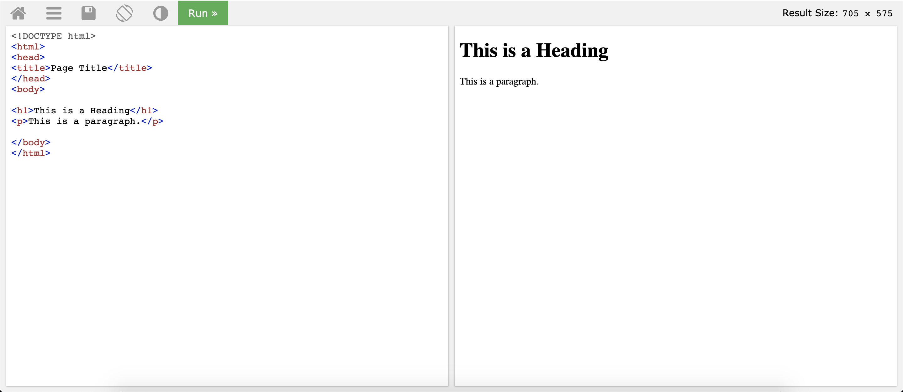
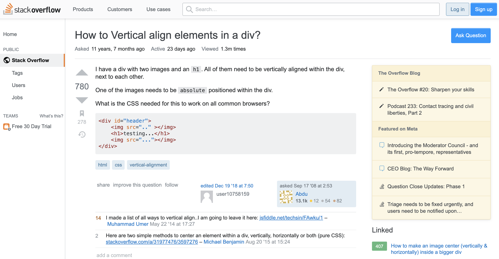
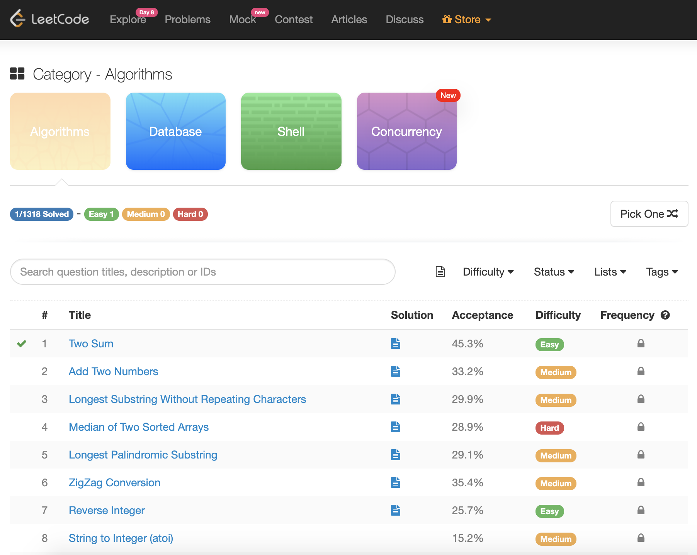

Meet Up
This was supposed to be my MeetUp experience page. Due to COVID-19, that is no longer possible. This will now be a page dedicated to some of the resources I have used while creating this website.
W3Schools
W3Schools is one of the best resources for web development. Whenever I search for HTML tags or CSS styles, W3Schools is always one of the top results on Google. The documentation is very organized and the examples provided are one of their best features. I always click the try it yourself button in order mess around with the example. I always have W3Schools open when I am working on a website.
This screenshot is an example of their Tryit editor. The page on the right will indicate your code on the left.
Stack Overflow
Stack Overflow is a website where developers ask and answer questions. I find myself on this website very often when I Google my questions. There is a good chance that another developer has ran into the same bug as you have in the past and asked that question on Stack Overflow. It is a forum and the quality of the answers depends on the quality of the community. The voting system ensures that the answered deemed 'best' by the community is the one a future developer will see first.
Example question found on Stack Overflow.
LeetCode
LeetCode is a website where I practice coding problems. It is a great way to prepare for potential interviews. The problems are sorted by difficulty and there are a lot of fellow developers eager to help you if you get stuck. The problems already have built in test cases so all you need to focus on is coming up with a solution. LeetCode supports many languages, but I personally use JavaScript and Java.
Here you can see an example of the types of problems that LeetCode offers.